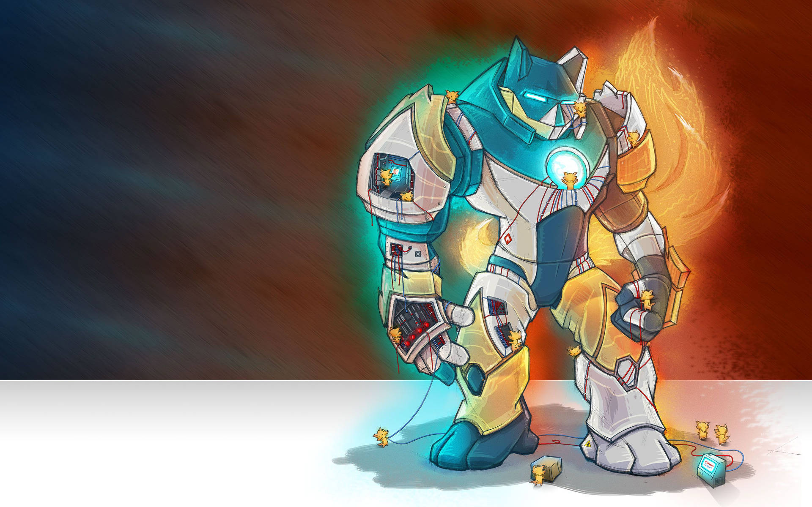
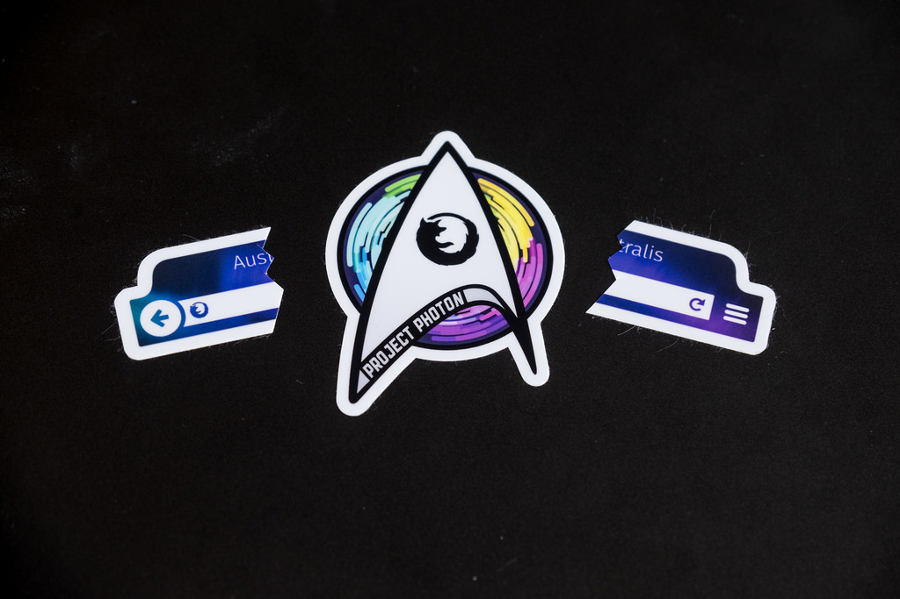
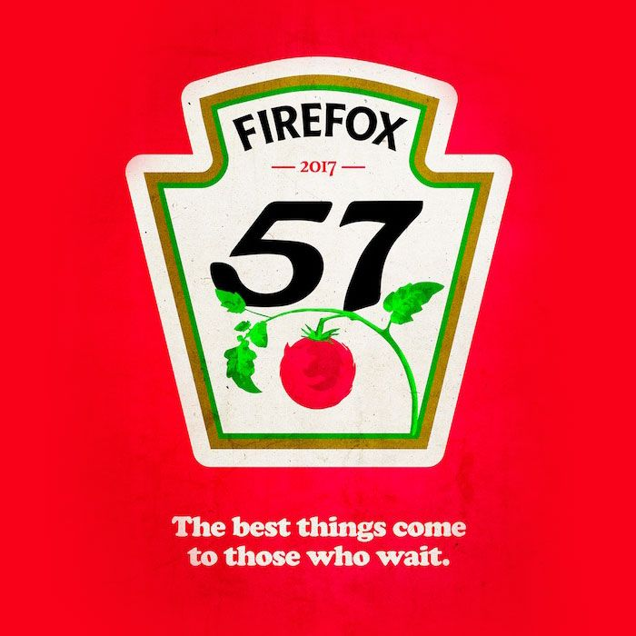

Firefox v roce 2017
Michal Stanke
<mstanke@mozilla.cz>
,
@MozillaCZ
,
Fedora Release Party 2017, Praha

Firefox
Stalo se
✝ staré systémy
✝ zásuvné moduly (výjimkou Flash)
Firefox ve více procesech => sandbox
kratší vývojový cyklus
varování před HTTP
zabezpečení některých API
To je všechno moc pěkné, ale…
Quantum
na počátku bylo Servo
jádro nové generace
napsáno v Rustu
využití GPU
CSS, vykreslování, DOM, UI
Photon

nové UI
i pro dotyková zařízení
počítač i mobily
Sbohem, kulaté panely.

Stahujte, testujte a ptejte se ;)
mozilla.cz
testpilot.firefox.com
nightly.mozilla.org
firefox-flatpak.mojefedora.cz
@MozillaCZ